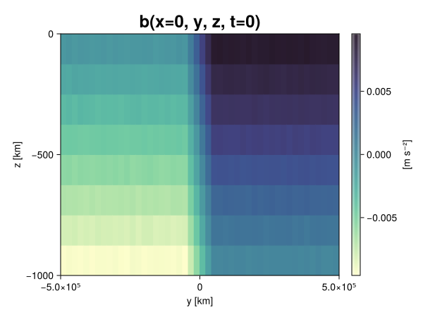
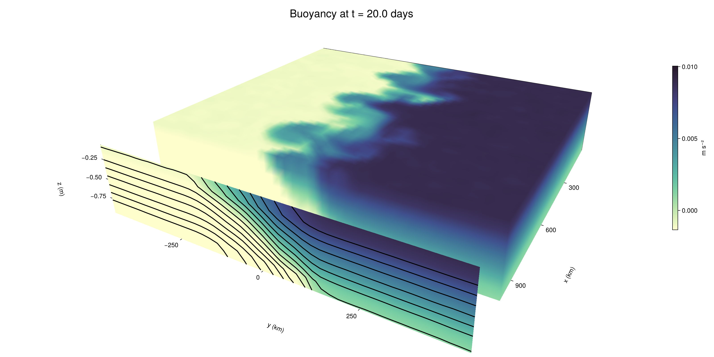

Baroclinic adjustment
In this example, we simulate the evolution and equilibration of a baroclinically unstable front.
Install dependencies
First let's make sure we have all required packages installed.
using Pkg
pkg"add Oceananigans, CairoMakie"using Oceananigans
using Oceananigans.UnitsGrid
We use a three-dimensional channel that is periodic in the x direction:
Lx = 1000kilometers # east-west extent [m]
Ly = 1000kilometers # north-south extent [m]
Lz = 1kilometers # depth [m]
grid = RectilinearGrid(size = (48, 48, 8),
x = (0, Lx),
y = (-Ly/2, Ly/2),
z = (-Lz, 0),
topology = (Periodic, Bounded, Bounded))48×48×8 RectilinearGrid{Float64, Periodic, Bounded, Bounded} on CPU with 3×3×3 halo
├── Periodic x ∈ [0.0, 1.0e6) regularly spaced with Δx=20833.3
├── Bounded y ∈ [-500000.0, 500000.0] regularly spaced with Δy=20833.3
└── Bounded z ∈ [-1000.0, 0.0] regularly spaced with Δz=125.0Model
We built a HydrostaticFreeSurfaceModel with an ImplicitFreeSurface solver. Regarding Coriolis, we use a beta-plane centered at 45° South.
model = HydrostaticFreeSurfaceModel(; grid,
coriolis = BetaPlane(latitude = -45),
buoyancy = BuoyancyTracer(),
tracers = :b,
momentum_advection = WENO(),
tracer_advection = WENO())HydrostaticFreeSurfaceModel{CPU, RectilinearGrid}(time = 0 seconds, iteration = 0)
├── grid: 48×48×8 RectilinearGrid{Float64, Periodic, Bounded, Bounded} on CPU with 3×3×3 halo
├── timestepper: QuasiAdamsBashforth2TimeStepper
├── tracers: b
├── closure: Nothing
├── buoyancy: BuoyancyTracer with ĝ = NegativeZDirection()
├── free surface: ImplicitFreeSurface with gravitational acceleration 9.80665 m s⁻²
│ └── solver: FFTImplicitFreeSurfaceSolver
├── advection scheme:
│ ├── momentum: WENO reconstruction order 5
│ └── b: WENO reconstruction order 5
└── coriolis: BetaPlane{Float64}We start our simulation from rest with a baroclinically unstable buoyancy distribution. We use ramp(y, Δy), defined below, to specify a front with width Δy and horizontal buoyancy gradient M². We impose the front on top of a vertical buoyancy gradient N² and a bit of noise.
"""
ramp(y, Δy)
Linear ramp from 0 to 1 between -Δy/2 and +Δy/2.
For example:
```
y < -Δy/2 => ramp = 0
-Δy/2 < y < -Δy/2 => ramp = y / Δy
y > Δy/2 => ramp = 1
```
"""
ramp(y, Δy) = min(max(0, y/Δy + 1/2), 1)
N² = 1e-5 # [s⁻²] buoyancy frequency / stratification
M² = 1e-7 # [s⁻²] horizontal buoyancy gradient
Δy = 100kilometers # width of the region of the front
Δb = Δy * M² # buoyancy jump associated with the front
ϵb = 1e-2 * Δb # noise amplitude
bᵢ(x, y, z) = N² * z + Δb * ramp(y, Δy) + ϵb * randn()
set!(model, b=bᵢ)Let's visualize the initial buoyancy distribution.
using CairoMakie
# Build coordinates with units of kilometers
x, y, z = 1e-3 .* nodes(grid, (Center(), Center(), Center()))
b = model.tracers.b
fig, ax, hm = heatmap(view(b, 1, :, :),
colormap = :deep,
axis = (xlabel = "y [km]",
ylabel = "z [km]",
title = "b(x=0, y, z, t=0)",
titlesize = 24))
Colorbar(fig[1, 2], hm, label = "[m s⁻²]")
fig
Simulation
Now let's build a Simulation.
simulation = Simulation(model, Δt=20minutes, stop_time=20days)Simulation of HydrostaticFreeSurfaceModel{CPU, RectilinearGrid}(time = 0 seconds, iteration = 0)
├── Next time step: 20 minutes
├── Elapsed wall time: 0 seconds
├── Wall time per iteration: NaN days
├── Stop time: 20 days
├── Stop iteration : Inf
├── Wall time limit: Inf
├── Callbacks: OrderedDict with 4 entries:
│ ├── stop_time_exceeded => Callback of stop_time_exceeded on IterationInterval(1)
│ ├── stop_iteration_exceeded => Callback of stop_iteration_exceeded on IterationInterval(1)
│ ├── wall_time_limit_exceeded => Callback of wall_time_limit_exceeded on IterationInterval(1)
│ └── nan_checker => Callback of NaNChecker for u on IterationInterval(100)
├── Output writers: OrderedDict with no entries
└── Diagnostics: OrderedDict with no entriesWe add a TimeStepWizard callback to adapt the simulation's time-step,
conjure_time_step_wizard!(simulation, IterationInterval(20), cfl=0.2, max_Δt=20minutes)Also, we add a callback to print a message about how the simulation is going,
using Printf
wall_clock = Ref(time_ns())
function print_progress(sim)
u, v, w = model.velocities
progress = 100 * (time(sim) / sim.stop_time)
elapsed = (time_ns() - wall_clock[]) / 1e9
@printf("[%05.2f%%] i: %d, t: %s, wall time: %s, max(u): (%6.3e, %6.3e, %6.3e) m/s, next Δt: %s\n",
progress, iteration(sim), prettytime(sim), prettytime(elapsed),
maximum(abs, u), maximum(abs, v), maximum(abs, w), prettytime(sim.Δt))
wall_clock[] = time_ns()
return nothing
end
add_callback!(simulation, print_progress, IterationInterval(100))Diagnostics/Output
Here, we save the buoyancy, $b$, at the edges of our domain as well as the zonal ($x$) average of buoyancy.
u, v, w = model.velocities
ζ = ∂x(v) - ∂y(u)
B = Average(b, dims=1)
U = Average(u, dims=1)
V = Average(v, dims=1)
filename = "baroclinic_adjustment"
save_fields_interval = 0.5day
slicers = (east = (grid.Nx, :, :),
north = (:, grid.Ny, :),
bottom = (:, :, 1),
top = (:, :, grid.Nz))
for side in keys(slicers)
indices = slicers[side]
simulation.output_writers[side] = JLD2OutputWriter(model, (; b, ζ);
filename = filename * "_$(side)_slice",
schedule = TimeInterval(save_fields_interval),
overwrite_existing = true,
indices)
end
simulation.output_writers[:zonal] = JLD2OutputWriter(model, (; b=B, u=U, v=V);
filename = filename * "_zonal_average",
schedule = TimeInterval(save_fields_interval),
overwrite_existing = true)JLD2OutputWriter scheduled on TimeInterval(12 hours):
├── filepath: ./baroclinic_adjustment_zonal_average.jld2
├── 3 outputs: (b, u, v)
├── array type: Array{Float64}
├── including: [:grid, :coriolis, :buoyancy, :closure]
├── file_splitting: NoFileSplitting
└── file size: 30.7 KiBNow we're ready to run.
@info "Running the simulation..."
run!(simulation)
@info "Simulation completed in " * prettytime(simulation.run_wall_time)[ Info: Running the simulation...
[ Info: Initializing simulation...
[00.00%] i: 0, t: 0 seconds, wall time: 19.635 seconds, max(u): (0.000e+00, 0.000e+00, 0.000e+00) m/s, next Δt: 20 minutes
[ Info: ... simulation initialization complete (19.820 seconds)
[ Info: Executing initial time step...
[ Info: ... initial time step complete (20.133 seconds).
[06.94%] i: 100, t: 1.389 days, wall time: 33.882 seconds, max(u): (1.314e-01, 1.201e-01, 1.579e-03) m/s, next Δt: 20 minutes
[13.89%] i: 200, t: 2.778 days, wall time: 2.206 seconds, max(u): (2.332e-01, 1.839e-01, 1.729e-03) m/s, next Δt: 20 minutes
[20.83%] i: 300, t: 4.167 days, wall time: 2.199 seconds, max(u): (3.039e-01, 2.379e-01, 1.652e-03) m/s, next Δt: 20 minutes
[27.78%] i: 400, t: 5.556 days, wall time: 2.200 seconds, max(u): (3.703e-01, 3.136e-01, 1.842e-03) m/s, next Δt: 20 minutes
[34.72%] i: 500, t: 6.944 days, wall time: 2.151 seconds, max(u): (4.443e-01, 4.355e-01, 1.873e-03) m/s, next Δt: 20 minutes
[41.67%] i: 600, t: 8.333 days, wall time: 2.180 seconds, max(u): (5.606e-01, 6.193e-01, 2.611e-03) m/s, next Δt: 20 minutes
[48.61%] i: 700, t: 9.722 days, wall time: 2.192 seconds, max(u): (7.946e-01, 9.545e-01, 3.264e-03) m/s, next Δt: 20 minutes
[55.56%] i: 800, t: 11.111 days, wall time: 2.211 seconds, max(u): (1.171e+00, 1.068e+00, 4.560e-03) m/s, next Δt: 20 minutes
[62.50%] i: 900, t: 12.500 days, wall time: 2.167 seconds, max(u): (1.355e+00, 1.134e+00, 5.073e-03) m/s, next Δt: 20 minutes
[69.44%] i: 1000, t: 13.889 days, wall time: 2.245 seconds, max(u): (1.280e+00, 1.022e+00, 3.610e-03) m/s, next Δt: 20 minutes
[76.39%] i: 1100, t: 15.278 days, wall time: 2.191 seconds, max(u): (1.178e+00, 9.847e-01, 3.745e-03) m/s, next Δt: 20 minutes
[83.33%] i: 1200, t: 16.667 days, wall time: 2.179 seconds, max(u): (1.159e+00, 1.081e+00, 3.449e-03) m/s, next Δt: 20 minutes
[90.28%] i: 1300, t: 18.056 days, wall time: 2.281 seconds, max(u): (1.137e+00, 1.259e+00, 4.523e-03) m/s, next Δt: 20 minutes
[97.22%] i: 1400, t: 19.444 days, wall time: 2.137 seconds, max(u): (1.168e+00, 1.288e+00, 2.887e-03) m/s, next Δt: 20 minutes
[ Info: Simulation is stopping after running for 1.240 minutes.
[ Info: Simulation time 20 days equals or exceeds stop time 20 days.
[ Info: Simulation completed in 1.241 minutes
Visualization
All that's left is to make a pretty movie. Actually, we make two visualizations here. First, we illustrate how to make a 3D visualization with Makie's Axis3 and Makie.surface. Then we make a movie in 2D. We use CairoMakie in this example, but note that using GLMakie is more convenient on a system with OpenGL, as figures will be displayed on the screen.
using CairoMakieThree-dimensional visualization
We load the saved buoyancy output on the top, north, and east surface as FieldTimeSerieses.
filename = "baroclinic_adjustment"
sides = keys(slicers)
slice_filenames = NamedTuple(side => filename * "_$(side)_slice.jld2" for side in sides)
b_timeserieses = (east = FieldTimeSeries(slice_filenames.east, "b"),
north = FieldTimeSeries(slice_filenames.north, "b"),
top = FieldTimeSeries(slice_filenames.top, "b"))
B_timeseries = FieldTimeSeries(filename * "_zonal_average.jld2", "b")
times = B_timeseries.times
grid = B_timeseries.grid48×48×8 RectilinearGrid{Float64, Periodic, Bounded, Bounded} on CPU with 3×3×3 halo
├── Periodic x ∈ [0.0, 1.0e6) regularly spaced with Δx=20833.3
├── Bounded y ∈ [-500000.0, 500000.0] regularly spaced with Δy=20833.3
└── Bounded z ∈ [-1000.0, 0.0] regularly spaced with Δz=125.0We build the coordinates. We rescale horizontal coordinates to kilometers.
xb, yb, zb = nodes(b_timeserieses.east)
xb = xb ./ 1e3 # convert m -> km
yb = yb ./ 1e3 # convert m -> km
Nx, Ny, Nz = size(grid)
x_xz = repeat(x, 1, Nz)
y_xz_north = y[end] * ones(Nx, Nz)
z_xz = repeat(reshape(z, 1, Nz), Nx, 1)
x_yz_east = x[end] * ones(Ny, Nz)
y_yz = repeat(y, 1, Nz)
z_yz = repeat(reshape(z, 1, Nz), grid.Ny, 1)
x_xy = x
y_xy = y
z_xy_top = z[end] * ones(grid.Nx, grid.Ny)Then we create a 3D axis. We use zonal_slice_displacement to control where the plot of the instantaneous zonal average flow is located.
fig = Figure(size = (1600, 800))
zonal_slice_displacement = 1.2
ax = Axis3(fig[2, 1],
aspect=(1, 1, 1/5),
xlabel = "x (km)",
ylabel = "y (km)",
zlabel = "z (m)",
xlabeloffset = 100,
ylabeloffset = 100,
zlabeloffset = 100,
limits = ((x[1], zonal_slice_displacement * x[end]), (y[1], y[end]), (z[1], z[end])),
elevation = 0.45,
azimuth = 6.8,
xspinesvisible = false,
zgridvisible = false,
protrusions = 40,
perspectiveness = 0.7)Axis3()We use data from the final savepoint for the 3D plot. Note that this plot can easily be animated by using Makie's Observable. To dive into Observables, check out Makie.jl's Documentation.
n = length(times)41Now let's make a 3D plot of the buoyancy and in front of it we'll use the zonally-averaged output to plot the instantaneous zonal-average of the buoyancy.
b_slices = (east = interior(b_timeserieses.east[n], 1, :, :),
north = interior(b_timeserieses.north[n], :, 1, :),
top = interior(b_timeserieses.top[n], :, :, 1))
# Zonally-averaged buoyancy
B = interior(B_timeseries[n], 1, :, :)
clims = 1.1 .* extrema(b_timeserieses.top[n][:])
kwargs = (colorrange=clims, colormap=:deep, shading=NoShading)
surface!(ax, x_yz_east, y_yz, z_yz; color = b_slices.east, kwargs...)
surface!(ax, x_xz, y_xz_north, z_xz; color = b_slices.north, kwargs...)
surface!(ax, x_xy, y_xy, z_xy_top; color = b_slices.top, kwargs...)
sf = surface!(ax, zonal_slice_displacement .* x_yz_east, y_yz, z_yz; color = B, kwargs...)
contour!(ax, y, z, B; transformation = (:yz, zonal_slice_displacement * x[end]),
levels = 15, linewidth = 2, color = :black)
Colorbar(fig[2, 2], sf, label = "m s⁻²", height = Relative(0.4), tellheight=false)
title = "Buoyancy at t = " * string(round(times[n] / day, digits=1)) * " days"
fig[1, 1:2] = Label(fig, title; fontsize = 24, tellwidth = false, padding = (0, 0, -120, 0))
rowgap!(fig.layout, 1, Relative(-0.2))
colgap!(fig.layout, 1, Relative(-0.1))
save("baroclinic_adjustment_3d.png", fig)
Two-dimensional movie
We make a 2D movie that shows buoyancy $b$ and vertical vorticity $ζ$ at the surface, as well as the zonally-averaged zonal and meridional velocities $U$ and $V$ in the $(y, z)$ plane. First we load the FieldTimeSeries and extract the additional coordinates we'll need for plotting
ζ_timeseries = FieldTimeSeries(slice_filenames.top, "ζ")
U_timeseries = FieldTimeSeries(filename * "_zonal_average.jld2", "u")
B_timeseries = FieldTimeSeries(filename * "_zonal_average.jld2", "b")
V_timeseries = FieldTimeSeries(filename * "_zonal_average.jld2", "v")
xζ, yζ, zζ = nodes(ζ_timeseries)
yv = ynodes(V_timeseries)
xζ = xζ ./ 1e3 # convert m -> km
yζ = yζ ./ 1e3 # convert m -> km
yv = yv ./ 1e3 # convert m -> km49-element Vector{Float64}:
-500.0
-479.1666666666667
-458.3333333333333
-437.5
-416.6666666666667
-395.8333333333333
-375.0
-354.1666666666667
-333.3333333333333
-312.5
-291.6666666666667
-270.8333333333333
-250.0
-229.16666666666666
-208.33333333333334
-187.5
-166.66666666666666
-145.83333333333334
-125.0
-104.16666666666667
-83.33333333333333
-62.5
-41.666666666666664
-20.833333333333332
0.0
20.833333333333332
41.666666666666664
62.5
83.33333333333333
104.16666666666667
125.0
145.83333333333334
166.66666666666666
187.5
208.33333333333334
229.16666666666666
250.0
270.8333333333333
291.6666666666667
312.5
333.3333333333333
354.1666666666667
375.0
395.8333333333333
416.6666666666667
437.5
458.3333333333333
479.1666666666667
500.0Next, we set up a plot with 4 panels. The top panels are large and square, while the bottom panels get a reduced aspect ratio through rowsize!.
set_theme!(Theme(fontsize=24))
fig = Figure(size=(1800, 1000))
axb = Axis(fig[1, 2], xlabel="x (km)", ylabel="y (km)", aspect=1)
axζ = Axis(fig[1, 3], xlabel="x (km)", ylabel="y (km)", aspect=1, yaxisposition=:right)
axu = Axis(fig[2, 2], xlabel="y (km)", ylabel="z (m)")
axv = Axis(fig[2, 3], xlabel="y (km)", ylabel="z (m)", yaxisposition=:right)
rowsize!(fig.layout, 2, Relative(0.3))To prepare a plot for animation, we index the timeseries with an Observable,
n = Observable(1)
b_top = @lift interior(b_timeserieses.top[$n], :, :, 1)
ζ_top = @lift interior(ζ_timeseries[$n], :, :, 1)
U = @lift interior(U_timeseries[$n], 1, :, :)
V = @lift interior(V_timeseries[$n], 1, :, :)
B = @lift interior(B_timeseries[$n], 1, :, :)Observable([-0.009390900981481218 -0.008141150599598829 -0.006864125966166239 -0.005622030104853101 -0.004373945196318453 -0.003120272540174718 -0.0018768025697770243 -0.0006211835358056125; -0.009382726889988091 -0.008132695508862134 -0.006878379643694955 -0.005626726636033085 -0.0043836404230064826 -0.003123096065232917 -0.001891131940741304 -0.0006278722863442262; -0.009378686736485115 -0.008120216850373068 -0.0068711035438276434 -0.005620500638748073 -0.004370127302773446 -0.0031430630062087013 -0.001862378597436742 -0.0006010670283853677; -0.009408119078095344 -0.008128276157636295 -0.006874796152289118 -0.005621627454311317 -0.004393416448880126 -0.003131078085348226 -0.001882775546157898 -0.0006298536303766534; -0.00938405918345388 -0.00812626377845293 -0.00688111386673933 -0.005604806122298242 -0.0043794201339957045 -0.003121118425012064 -0.001864279722408462 -0.0006268934316558065; -0.009385037785892258 -0.008135965828332542 -0.00688172765299747 -0.005600391172369444 -0.004375058715199728 -0.003139890156523582 -0.0018687513225772029 -0.0006333235006262734; -0.009377820220349877 -0.0080981296897669 -0.006872354280320081 -0.005612787694633939 -0.004371613762848817 -0.0031221422279670203 -0.0018728885830342848 -0.0005948905981371349; -0.009358281511571935 -0.008143042214679977 -0.006879552043884622 -0.005622399046625588 -0.004353386888377295 -0.003137248998000446 -0.001878271070286118 -0.0006195113412611669; -0.009355029491487898 -0.008113919676516139 -0.006884057604176323 -0.005608610107016677 -0.004400831123998102 -0.0031203002544914807 -0.0018936994084673819 -0.0006255447907252788; -0.009390973343585228 -0.008095688728524396 -0.00685994783026581 -0.00563017129936049 -0.004379070739090053 -0.0031450282163571347 -0.001869398053747361 -0.0006340783072404627; -0.00937387930151639 -0.008121513553510849 -0.006873256171598739 -0.005646273873350985 -0.004366355792986156 -0.0031391523084275223 -0.0018716685339510567 -0.0006189838561563118; -0.009394586370329291 -0.00814780148180567 -0.0068876364682237375 -0.005611514467062716 -0.00436262901119143 -0.0031014639378436197 -0.0018627721893839802 -0.0006189199326147586; -0.009368061259342099 -0.00812085834520162 -0.006846487693412844 -0.005605159025778842 -0.004383739287872806 -0.0031313047575091866 -0.001854807188831321 -0.0006457153791994671; -0.009376648179729469 -0.008151241637215824 -0.006876027084633866 -0.0056402907296703095 -0.00435864462978512 -0.0031241292214462366 -0.001877092470631222 -0.0006227140634480645; -0.009374989463111582 -0.008139836310413161 -0.006867062424011434 -0.005636604903425466 -0.004363579881675016 -0.003133759677480786 -0.0018695972642475002 -0.0006162928269690195; -0.009406667463062466 -0.008105525380206799 -0.006909285458573107 -0.005642337825262051 -0.004370537971399459 -0.0031316598792336414 -0.001864428464134876 -0.0006392838869552715; -0.009377343027950227 -0.008117362300715763 -0.0068938176046764105 -0.0056234768152113555 -0.004382153295694339 -0.0031180442713570774 -0.0018611227115076761 -0.0006374285823463646; -0.009381395636180413 -0.008160640073839312 -0.006878754654017764 -0.005634782391605961 -0.0043722477750576865 -0.003139718756260184 -0.0018825346758275755 -0.0006140785909460384; -0.00936213535186871 -0.00812169566727483 -0.006880896768282712 -0.005649434450533934 -0.004360647585285249 -0.003124603727422532 -0.001846909768496 -0.0006225198797312831; -0.009383185673397569 -0.008134191926026596 -0.006861966992377153 -0.005624819568766548 -0.004366046028649778 -0.0031212739788719023 -0.0018977754123398291 -0.0006294413855308304; -0.009366083922299998 -0.008137089127057011 -0.006870892504123917 -0.005632973836817798 -0.0043669258170205534 -0.003118948811479578 -0.0018739564426984705 -0.0006270041776654125; -0.009385911945908237 -0.008112658070827285 -0.006862261663299182 -0.005615624714077154 -0.00437278771007401 -0.003133911223688357 -0.0019133474332053483 -0.000622757369048338; -0.007523197728851627 -0.006244110800326226 -0.005013472398421332 -0.0037617323144341253 -0.0025091267533810077 -0.001258882798847577 -9.075224048940837e-6 0.0012510488486219744; -0.005419549333590342 -0.004130467322769236 -0.002912614835324935 -0.0016661047175764584 -0.0004192125978198879 0.0008314788467999301 0.0020792806235172046 0.0033253717932968745; -0.003318511558962675 -0.00209031777229599 -0.0008481008620559765 0.0004153912437866174 0.0016667513567856617 0.0029156477571992204 0.004184647952363436 0.005418296652909102; -0.0012412381862578195 -3.6826474907845946e-6 0.0012501325875509263 0.0025132561535521716 0.003756982542650476 0.005005185807665244 0.0062493101578864315 0.00749112007111646; 0.0006532227055573893 0.0018637744827275694 0.003122843129130403 0.004359112562347556 0.005639342620621622 0.006862622247655305 0.008116991748270422 0.00936088716426785; 0.000607758102919255 0.001881728627287653 0.003127761724074162 0.0043995167988808625 0.005626982855208078 0.006862216981831056 0.008125487097484773 0.00937706167853196; 0.0006266179107338372 0.001873426367331777 0.0031334429350269176 0.004385001810133799 0.005638865420462602 0.006876988421647486 0.008113736634564994 0.00937695501849071; 0.0006037198793364386 0.0018735085931670364 0.0031329529277429025 0.004364262119394728 0.005643877109852158 0.006880855099894489 0.00812431497383429 0.009344300758825802; 0.0006275467254575272 0.0018882402894394629 0.003123732835305105 0.004407382872407725 0.005636095034364474 0.006878842642374215 0.008122907301364354 0.009399394538131736; 0.0006345247627359181 0.0018852874561416891 0.0030975676543704526 0.004373690638460187 0.005636371990785351 0.006852494309144408 0.008138910941144361 0.00938727972583593; 0.0006193269731174955 0.0018884004742285687 0.003150486448729743 0.004358595234542246 0.0056384788776961915 0.006841533866707113 0.008119277700880419 0.00938491187149846; 0.0006115386840816877 0.0018843249604469665 0.003122568882060552 0.004367170979121127 0.0056248778581522085 0.0068731160472672885 0.008129368951481678 0.009369827021810453; 0.0006435561028542862 0.0018941398439621942 0.003148222971979276 0.004355137715397484 0.005640555333012029 0.006873479926420433 0.008140621409328072 0.009388350443732181; 0.0006233221906258687 0.0018767572063663749 0.0031340496731757633 0.004350819108237123 0.005616531996013949 0.006893281673615131 0.008146064651284939 0.009379711778707835; 0.0006243968155160887 0.0018653905276839243 0.003149401891873791 0.004387669682845023 0.005642002914509665 0.00683899343066303 0.008129254799913261 0.00936955912523934; 0.000607013221631962 0.00186274843520292 0.0031307461299992494 0.004382335634394936 0.005637869831636843 0.006886922403681062 0.00811498920642561 0.009362049390772705; 0.0006263675871963097 0.0018886495049759578 0.003126736672533876 0.00439133868569282 0.005646667167033073 0.0068674589551143694 0.008104774394699086 0.00938742221159958; 0.0006309847829757809 0.001866670098470796 0.0031334981577327303 0.004394456798283384 0.005638541762277971 0.0068663502138339464 0.008112612123831736 0.00937737801283321; 0.0006407918971718145 0.001882839130865596 0.0031171798895782182 0.004370310043606152 0.005624147177022159 0.006873785207224787 0.008130382995724553 0.009382771619568938; 0.0006071742407716894 0.0018817927711571583 0.0031379712520764208 0.004364896967882667 0.005630879772505017 0.006882110291178643 0.00813134451176638 0.009378400009785872; 0.0006182936673787895 0.001836308755733403 0.0031311807649414443 0.004387313460381266 0.005615601933878334 0.006861507551856306 0.008111378263379153 0.009390830650752259; 0.000592106059453785 0.0018627970671660724 0.003103684045478185 0.004386848967119733 0.0056570127124888556 0.00686345266301587 0.008137292771309366 0.009357597748675997; 0.0006109913845557849 0.001879728474095797 0.003103012097456094 0.0044084067965383805 0.005625102204366427 0.0068562623138155475 0.008148016549452379 0.009371391912831976; 0.000630525013643921 0.0019022290038266023 0.00312639215962807 0.004325701320890777 0.0056189082237315495 0.0068707529828625795 0.008139560987699048 0.009374904534725968; 0.0006361713482446665 0.001846912441581591 0.0031524091638028967 0.004357174110198237 0.005614113328605193 0.006884471912886335 0.008126391292544196 0.009369901980416701; 0.0006282754264539401 0.0018847743498032962 0.0031130194856281907 0.0043853075594583 0.005628115338407551 0.00687316713274835 0.008118976166110558 0.009374377390473183])
and then build our plot:
hm = heatmap!(axb, xb, yb, b_top, colorrange=(0, Δb), colormap=:thermal)
Colorbar(fig[1, 1], hm, flipaxis=false, label="Surface b(x, y) (m s⁻²)")
hm = heatmap!(axζ, xζ, yζ, ζ_top, colorrange=(-5e-5, 5e-5), colormap=:balance)
Colorbar(fig[1, 4], hm, label="Surface ζ(x, y) (s⁻¹)")
hm = heatmap!(axu, yb, zb, U; colorrange=(-5e-1, 5e-1), colormap=:balance)
Colorbar(fig[2, 1], hm, flipaxis=false, label="Zonally-averaged U(y, z) (m s⁻¹)")
contour!(axu, yb, zb, B; levels=15, color=:black)
hm = heatmap!(axv, yv, zb, V; colorrange=(-1e-1, 1e-1), colormap=:balance)
Colorbar(fig[2, 4], hm, label="Zonally-averaged V(y, z) (m s⁻¹)")
contour!(axv, yb, zb, B; levels=15, color=:black)Finally, we're ready to record the movie.
frames = 1:length(times)
record(fig, filename * ".mp4", frames, framerate=8) do i
n[] = i
endThis page was generated using Literate.jl.